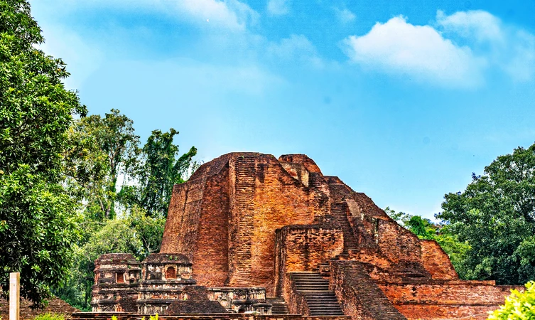

Dating back to the 5th century CE, the Nalanda Mahavihara served as the top scholastic institution of Buddhist learning for a period of 800 years. The university flourished under the patronage of the Gupta dynasty and Emperor Harshavardhan and started to decline in the 9th century when the Pala dynasty established 4 other institutions of Buddhist education.
The institution was totally ransacked by Bakhtiyar Khilji in the 12th century. During its peak operational years, the university sheltered 10,000 students from countries like China, Korea, and Tibet. In the 7th century, the institution also taught the Vedas, metaphysics, and Buddhist theology to the popular Chinese scholar Hsuan-Tsang.
At present, the Nalanda Mahavihara is in ruins and makes for one of the UNESCO declared historical places in Bihar. The ruins of this magnificent university are still capable of proving as to why the Nalanda Mahavihara is famous educational institutions of all times.
Historical Facts:
-This institution of buddhist learning is believed to be found during the Gupta Dynasty.
-It was attacked thrice by the invaders.
-Its library has so many manuscripts and information penned down onto paper that it kept burning for around 5 months after being invaded.
Location: Nalanda University Site Rd, Bargaon, Bihar 803111
Timing: 9 AM to 5 PM, Everyday.